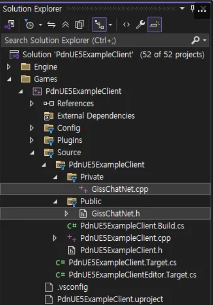
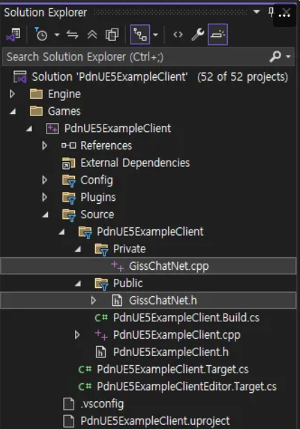
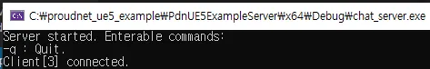
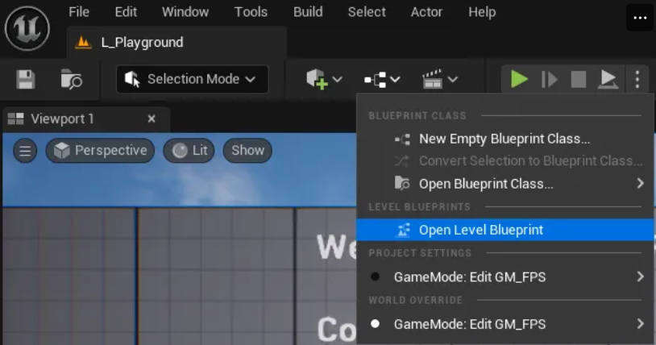
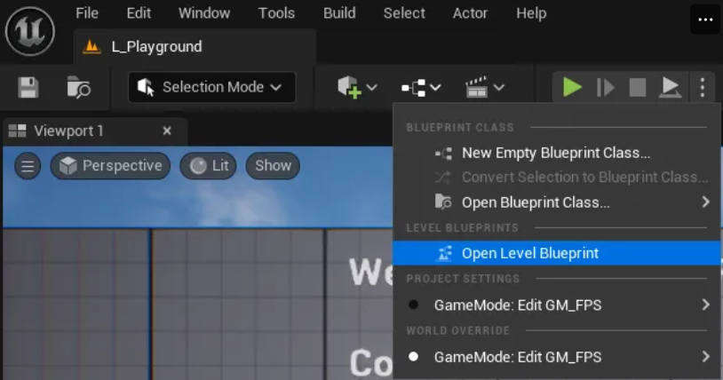
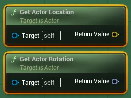
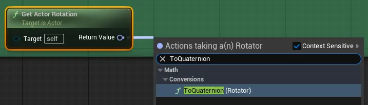
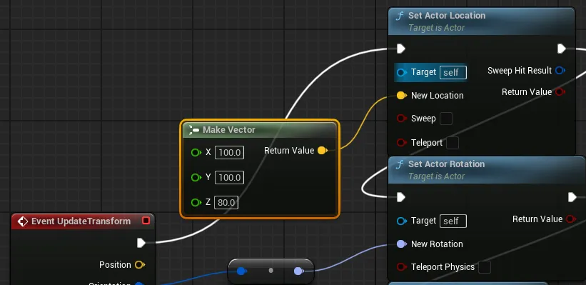
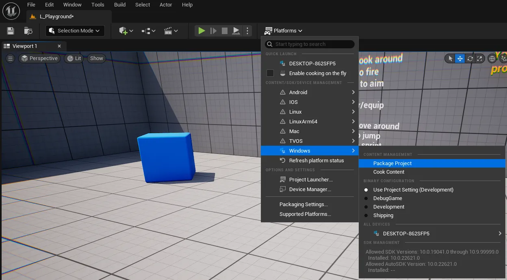
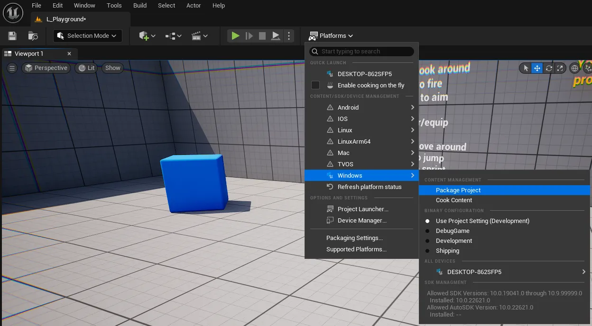

Contoh ProudNet UE5
Panduan komprehensif untuk mengimplementasikan game multiplayer menggunakan library networking ProudNet dan Unreal Engine 5. Mencakup sistem chat, networking karakter, dan fitur multiplayer lanjutan.
📋 Daftar Isi
- 1. Pengaturan Proyek
Mempersiapkan dan mengkonfigurasi proyek Unreal Engine 5 untuk integrasi ProudNet
- 2. Membuat Chat Lokal
Membuat sistem chat lokal dasar untuk pengujian dan fondasi
- 3. Membuat Chat Online
Mengimplementasikan fungsionalitas chat jaringan menggunakan ProudNet
- 4. Mengimplementasikan Karakter Mirage
Membangun karakter mirage dengan fitur gameplay yang ditingkatkan
- 5. Integrasi Online Karakter Mirage
Mengintegrasikan karakter mirage dengan networking ProudNet untuk gameplay multiplayer
- 6. Build dan Pengujian Proyek Akhir
Finalisasi proyek, build, dan prosedur pengujian komprehensif
1. Pengaturan Proyek
Bagian ini mencakup pengaturan awal dan konfigurasi yang diperlukan untuk membuat proyek Unreal Engine 5 dengan ProudNet yang diaktifkan.
1.1. Instalasi ProudNet
- Instal rilis terbaru dari repositori https://github.com/Nettention/ProudNet.
- Path instalasi default adalah "C:\Program Files (x86)\Nettention\ProudNet". Panduan ini dan plugin UE5 dikonfigurasi untuk path ini, jadi jika Anda mengubah path instalasi, Anda perlu memodifikasi kode sumber plugin dan meninjau panduan dengan hati-hati.
1.2. Konfigurasi Proyek Visual Studio
- Buat proyek kosong di Visual Studio
- Panduan ini menggunakan path/nama berikut.

Pembuatan Proyek Visual Studio
- Tambahkan 3 item baru ke proyek chat_server: main.cpp, setting.cpp, setting.h.

Menambahkan File Proyek

Struktur Proyek
- Modifikasi properti proyek chat_server.
- "C/C++ - Language - C++ Language Standard"
- Pilih "ISO C++20 Standard (/std:C++20)" dari dropdown
- "C/C++ - General - Additional Include Directories"
- Pilih <Edit…> dari dropdown
- Tambahkan path berikut di jendela popup
C:\Program Files (x86)\Nettention\ProudNet\include
- "Linker - General - Additional Library Directories"
- Pilih <Edit…> dari dropdown
- Tambahkan path berikut di jendela popup
C:\Program Files (x86)\Nettention\ProudNet\lib\$(Platform)\v140\$(Configuration)
- "Linker - Input - Additional Dependencies"
- Pilih <Edit…> dari dropdown
- Tambahkan nama file berikut di jendela popup
ProudNetServer.lib ProudNetClient.lib
- "Build Events - Post-Build Event - Command Line"
- Pilih <Edit…> dari dropdown
- Tambahkan perintah berikut di jendela popup
xcopy /Y "C:\Program Files (x86)\Nettention\ProudNet\lib\$(Platform)\v140\$(Configuration)\libcrypto-3-x64.dll" "$(OutDir)" xcopy /Y "C:\Program Files (x86)\Nettention\ProudNet\lib\$(Platform)\v140\$(Configuration)\libssl-3-x64.dll" "$(OutDir)"
- "C/C++ - Language - C++ Language Standard"
- Masukkan kode ke setiap file sumber.
- setting.h (diff)
+ #pragma once + + namespace ProudSetting + { + namespace CHAT + { + extern const ::Proud::Guid version; + extern const int server_port; + } + } - setting.cpp (diff)
+ #include <ProudNetClient.h> + #include "setting.h" + + namespace ProudSetting + { + namespace CHAT + { + const ::Proud::PNGUID guid = { 0x3ae33249, 0xecc6, 0x4980, { 0xbc, 0x5d, 0x7b, 0xa, 0x99, 0x9c, 0x7, 0x39 } }; + const ::Proud::Guid version = ::Proud::Guid(guid); + const int server_port = 33337; + } + } - main.cpp (diff)
+ #include <iostream> + #include <format> + #include <memory> + + #include <ProudNetServer.h> + #include "setting.h" + + std::shared_ptr<Proud::CNetServer> net_server; + + int main() + { + net_server = std::shared_ptr<Proud::CNetServer>(Proud::CNetServer::Create()); + + net_server->OnClientJoin = [](Proud::CNetClientInfo* clientInfo) + { + std::cout << "Client[" << (int)clientInfo->m_HostID << "] connected.\n"; + }; + net_server->OnClientLeave = [](Proud::CNetClientInfo* clientInfo, Proud::ErrorInfo* error, const Proud::ByteArray byte_arr) + { + std::cout << "Client[" << (int)clientInfo->m_HostID << "] disconnected.\n"; + }; + + Proud::CStartServerParameter start_param; + start_param.m_protocolVersion = ProudSetting::CHAT::version; + start_param.m_tcpPorts.Add(ProudSetting::CHAT::server_port); + + try + { + net_server->Start(start_param); + } + catch (Proud::Exception& error) + { + std::cout << "Server start failed: " << error.what() << endl; + return 0; + } + + std::cout << ("Server started. Enterable commands:\n"); + std::cout << ("-q : Quit.\n"); + std::string input; + while (true) + { + std::cin >> input; + if (input[0] == '-') + { + if (input == "-q") + break; + } + } + + std::cout << "Stopping server...\n"; + net_server->Stop(); + net_server = nullptr; + std::cout << "Server stopped.\n"; + return 0; + }
Kode Lengkap
- setting.h
#pragma once namespace ProudSetting { namespace CHAT { extern const ::Proud::Guid version; extern const int server_port; } } - setting.cpp
#include <ProudNetClient.h> #include "setting.h" namespace ProudSetting { namespace CHAT { const ::Proud::PNGUID guid = { 0x3ae33249, 0xecc6, 0x4980, { 0xbc, 0x5d, 0x7b, 0xa, 0x99, 0x9c, 0x7, 0x39 } }; const ::Proud::Guid version = ::Proud::Guid(guid); const int server_port = 33337; } } - main.cpp
#include <iostream> #include <format> #include <memory> #include <ProudNetServer.h> #include "setting.h" std::shared_ptr<Proud::CNetServer> net_server; int main() { net_server = std::shared_ptr<Proud::CNetServer>(Proud::CNetServer::Create()); net_server->OnClientJoin = [](Proud::CNetClientInfo* clientInfo) { std::cout << "Client[" << (int)clientInfo->m_HostID << "] connected.\n"; }; net_server->OnClientLeave = [](Proud::CNetClientInfo* clientInfo, Proud::ErrorInfo* error, const Proud::ByteArray byte_arr) { std::cout << "Client[" << (int)clientInfo->m_HostID << "] disconnected.\n"; }; Proud::CStartServerParameter start_param; start_param.m_protocolVersion = ProudSetting::CHAT::version; start_param.m_tcpPorts.Add(ProudSetting::CHAT::server_port); try { net_server->Start(start_param); } catch (Proud::Exception& error) { std::cout << "Server start failed: " << error.what() << endl; return 0; } std::cout << ("Server started. Enterable commands:\n"); std::cout << ("-q : Quit.\n"); std::string input; while (true) { std::cin >> input; if (input[0] == '-') { if (input == "-q") break; } } std::cout << "Stopping server...\n"; net_server->Stop(); net_server = nullptr; std::cout << "Server stopped.\n"; return 0; }
- setting.h (diff)
- Build dan jalankan proyek (F5) untuk melihat layar berikut.

Layar Server Berjalan
1.3. Konfigurasi Proyek Unreal Engine
- Tambahkan Infima Games' Free FPS Template ke perpustakaan Anda.
- Buat proyek template mengikuti prosedur di bawah ini.
- Luncurkan Epic Games Launcher
- Navigasi ke tab Unreal Engine
- Navigasi ke tab Library
- Klik "Create Project" untuk "Free FPS Template & Tutorial" dalam daftar perpustakaan Fab
- Ubah nama dan folder, lalu klik Create
- Panduan ini menggunakan nama dan path berikut.

Pembuatan Proyek Unreal
- Buat kelas C++ mengikuti prosedur di bawah ini.
- Top Toolbar - Tools - New C++ Class

Menu Pembuatan Kelas C++
- Show All Classes, lalu pilih GameInstanceSubsystem

Pemilihan GameInstanceSubsystem
- Class Type - Pilih Public dan masukkan nama kelas, lalu buat kelas
- Panduan ini menggunakan GissChatNet.

Masukkan Nama Kelas
- Panduan ini menggunakan GissChatNet.
- Top Toolbar - Tools - New C++ Class
- Generate solusi VS untuk proyek Unreal mengikuti prosedur di bawah ini.
- Tutup editor Unreal Engine.
- Navigasi ke folder proyek Unreal.
- Klik kanan PdnUE5ExampleClient.uproject dan pilih Generate Visual Studio project files
- Ubah proyek startup (disarankan)
- Gambar panduan

Ubah Proyek Startup
- Terapkan plugin UE5 ProudNet mengikuti prosedur di bawah ini.
- Buka folder proyek Unreal.
Shortcut: Epic Games Launcher → My Projects → Klik kanan proyek → Show in Folder
- Ekstrak file berikut dan tempatkan di folder Plugins.
Buat folder Plugins baru jika tidak ada.
ProudNet UE5 Lib Linker Plugin.zip

Struktur Folder Plugin
- Regenerate solusi proyek Visual Studio.
- Tutup IDE Visual Studio.
- Klik kanan PdnUE5ExampleClient.uproject dan pilih Generate Visual Studio project files
- Modifikasi kode PdnUE5ExampleClient.Build.cs.
- Gambar panduan

Lokasi File Build.cs
- Modifikasi
// Fill out your copyright notice in the Description page of Project Settings. using UnrealBuildTool; public class PdnUE5ExampleClient : ModuleRules { public PdnUE5ExampleClient(ReadOnlyTargetRules Target) : base(Target) { PCHUsage = PCHUsageMode.UseExplicitOrSharedPCHs; - PublicDependencyModuleNames.AddRange(new string[] { "Core", "CoreUObject", "Engine", "InputCore" }); + PublicDependencyModuleNames.AddRange(new string[] { "Core", "CoreUObject", "Engine", "InputCore", "ProudNet" }); PrivateDependencyModuleNames.AddRange(new string[] { }); // Uncomment if you are using Slate UI // PrivateDependencyModuleNames.AddRange(new string[] { "Slate", "SlateCore" }); // Uncomment if you are using online features // PrivateDependencyModuleNames.Add("OnlineSubsystem"); // To include OnlineSubsystemSteam, add it to the plugins section in your uproject file with the Enabled attribute set to true } } - Kode Lengkap
// Fill out your copyright notice in the Description page of Project Settings. using UnrealBuildTool; public class PdnUE5ExampleClient : ModuleRules { public PdnUE5ExampleClient(ReadOnlyTargetRules Target) : base(Target) { PCHUsage = PCHUsageMode.UseExplicitOrSharedPCHs; PublicDependencyModuleNames.AddRange(new string[] { "Core", "CoreUObject", "Engine", "InputCore", "ProudNet" }); PrivateDependencyModuleNames.AddRange(new string[] { }); // Uncomment if you are using Slate UI // PrivateDependencyModuleNames.AddRange(new string[] { "Slate", "SlateCore" }); // Uncomment if you are using online features // PrivateDependencyModuleNames.Add("OnlineSubsystem"); // To include OnlineSubsystemSteam, add it to the plugins section in your uproject file with the Enabled attribute set to true } }
- Gambar panduan
- Buka folder proyek Unreal.
- Modifikasi kode GissChatNet.h dan .cpp.
- Gambar panduan

File GissChatNet
- GissChatNet.h (diff)
// Fill out your copyright notice in the Description page of Project Settings. #pragma once #include "CoreMinimal.h" #include "Subsystems/GameInstanceSubsystem.h" #include "GissChatNet.generated.h" /** * */ UCLASS() class PDNUE5EXAMPLECLIENT_API UGissChatNet : public UGameInstanceSubsystem { GENERATED_BODY() + private: + virtual void Initialize(FSubsystemCollectionBase& Collection) override; + virtual void Deinitialize() override; }; - GissChatNet.cpp (diff)
// Fill out your copyright notice in the Description page of Project Settings. #include "GissChatNet.h" + #include <format> + #include <functional> + + #include <ProudNetClient.h> + #include "C:/proudnet_ue5_example/PdnUE5ExampleServer/chat_server/setting.h" + #include "C:/proudnet_ue5_example/PdnUE5ExampleServer/chat_server/setting.cpp" + + static void LogPrint(const std::string& str) + { + UE_LOG(LogTemp, Log, TEXT("%s"), UTF8_TO_TCHAR(str.c_str())); + } + + static Proud::CriticalSection global_critical_section; + static std::shared_ptr<Proud::CNetClient> net_client; + static FDelegateHandle update_handle; + + void UGissChatNet::Initialize(FSubsystemCollectionBase& Collection) + { + net_client = std::shared_ptr<Proud::CNetClient>(Proud::CNetClient::Create()); + + bool connected = false; + + net_client->OnJoinServerComplete = [&](Proud::ErrorInfo* info, const Proud::ByteArray& replyFromServer) + { + Proud::CriticalSectionLock lock(global_critical_section, true); + + if (info->m_errorType == Proud::ErrorType::Ok) + { + auto log = std::format("Succeed to connect server. Allocated hostID={}\n", (int)net_client->GetLocalHostID()); + LogPrint(log); + + connected = true; + } + else + { + auto log = "Failed to connect to server.\n"; + LogPrint(log); + } + }; + + net_client->OnLeaveServer = [&](Proud::ErrorInfo* errorInfo) + { + Proud::CriticalSectionLock lock(global_critical_section, true); + + auto log = std::format("OnLeaveServer. {} \n", StringT2A(errorInfo->m_comment).GetString()); + LogPrint(log); + + connected = false; + if (update_handle.IsValid()) + { + FCoreDelegates::OnEndFrame.Remove(update_handle); + update_handle.Reset(); + } + }; + + Proud::CNetConnectionParam connection_param; + connection_param.m_protocolVersion = ProudSetting::CHAT::version; + connection_param.m_serverIP = _PNT("localhost"); + connection_param.m_serverPort = ProudSetting::CHAT::server_port; + connection_param.m_closeNoPingPongTcpConnections = false; + + net_client->Connect(connection_param); + + update_handle = FCoreDelegates::OnEndFrame.AddStatic([]() + { + if (net_client) + net_client->FrameMove(); + } + ); + } + + void UGissChatNet::Deinitialize() + { + net_client->Disconnect(); + net_client = nullptr; + } - Kode Lengkap
- GissChatNet.h
// Fill out your copyright notice in the Description page of Project Settings. #pragma once #include "CoreMinimal.h" #include "Subsystems/GameInstanceSubsystem.h" #include "GissChatNet.generated.h" /** * */ UCLASS() class PDNUE5EXAMPLECLIENT_API UGissChatNet : public UGameInstanceSubsystem { GENERATED_BODY() private: virtual void Initialize(FSubsystemCollectionBase& Collection) override; virtual void Deinitialize() override; }; - GissChatNet.cpp
// Fill out your copyright notice in the Description page of Project Settings. #include "GissChatNet.h" #include <format> #include <functional> #include <ProudNetClient.h> #include "C:/proudnet_ue5_example/PdnUE5ExampleServer/chat_server/setting.h" #include "C:/proudnet_ue5_example/PdnUE5ExampleServer/chat_server/setting.cpp" static void LogPrint(const std::string& str) { UE_LOG(LogTemp, Log, TEXT("%s"), UTF8_TO_TCHAR(str.c_str())); } static Proud::CriticalSection global_critical_section; static std::shared_ptr<Proud::CNetClient> net_client; static FDelegateHandle update_handle; void UGissChatNet::Initialize(FSubsystemCollectionBase& Collection) { net_client = std::shared_ptr<Proud::CNetClient>(Proud::CNetClient::Create()); bool connected = false; net_client->OnJoinServerComplete = [&](Proud::ErrorInfo* info, const Proud::ByteArray& replyFromServer) { Proud::CriticalSectionLock lock(global_critical_section, true); if (info->m_errorType == Proud::ErrorType::Ok) { auto log = std::format("Succeed to connect server. Allocated hostID={}\n", (int)net_client->GetLocalHostID()); LogPrint(log); connected = true; } else { auto log = "Failed to connect to server.\n"; LogPrint(log); } }; net_client->OnLeaveServer = [&](Proud::ErrorInfo* errorInfo) { Proud::CriticalSectionLock lock(global_critical_section, true); auto log = std::format("OnLeaveServer. {} \n", StringT2A(errorInfo->m_comment).GetString()); LogPrint(log); connected = false; if (update_handle.IsValid()) { FCoreDelegates::OnEndFrame.Remove(update_handle); update_handle.Reset(); } }; Proud::CNetConnectionParam connection_param; connection_param.m_protocolVersion = ProudSetting::CHAT::version; connection_param.m_serverIP = _PNT("localhost"); connection_param.m_serverPort = ProudSetting::CHAT::server_port; connection_param.m_closeNoPingPongTcpConnections = false; net_client->Connect(connection_param); update_handle = FCoreDelegates::OnEndFrame.AddStatic([]() { if (net_client) net_client->FrameMove(); } ); } void UGissChatNet::Deinitialize() { net_client->Disconnect(); net_client = nullptr; }
- GissChatNet.h
- Gambar panduan

- Pengujian
- Build dan jalankan chat_server dari PdnUE5ExampleServer.

Eksekusi chat_server
- Build PdnUE5ExampleClient dan jalankan level di editor Unreal Engine.

Eksekusi Editor Unreal
- Berhasil jika klien dan server terhubung seperti yang ditunjukkan di bawah ini.

Koneksi Server Berhasil
Koneksi Klien Berhasil
- Build dan jalankan chat_server dari PdnUE5ExampleServer.
2. Membuat Chat Lokal
Bagian ini mencakup pembuatan jendela chat lokal dan mengimplementasikan fungsionalitas chat dasar di Unreal Engine 5.
2.1. Membuat Widget Chat
- Buat blueprint widget BP_ChatWidget mengikuti prosedur di bawah ini
- Klik kanan pada area kosong di Content Browser untuk membuka menu konteks.
- Pilih "Create Advanced Asset - User Interface - Widget Blueprint".

Pembuatan Widget Blueprint
- Pilih "User Widget"
- Ubah nama menjadi BP_ChatWidget

Perubahan Nama Widget
- Konfigurasikan tampilan widget BP_ChatWidget mengikuti prosedur di bawah ini.
- Klik dua kali BP_ChatWidget untuk membuka editor Blueprint.
- Konfigurasikan widget sesuai dengan struktur di bawah ini.
- Struktur Elemen Widget
>> Canvas Panel >> Canvas Panel - Anchor: Bottom Left - Position: [x: 100, y: -200] - Size: [x: 640, y: 360] - Alignment: [x: 0, y: 1] >> Scroll Box - Anchor: Top - Position: [x: 0, y: 0] - Size: [x: 640, y: 300] - Alignment: [x: 0.5, y: 0] >> Canvas Panel - Anchor: Bottom - Position: [x: 0, y: 0] - Size: [x: 640, y: 48] - Alignment: [x: 0.5, y: 1] >> Text Box - Anchor: Left - Position: [x: 0, y: 0] - Size: [x: 520, y: 48] - Alignment: [x: 0, y: 0.5] >> Button - Anchor: Right - Position: [x: 0, y: 0] - Size: [x: 100, y: 48] - Alignment: [x: 1, y: 0.5] >> Text - Text: "Send"
Tampilan setelah konfigurasi selesai adalah sebagai berikut.

Konfigurasi Widget Chat
- Struktur Elemen Widget
- Tambahkan BP_ChatWidget ke viewport mengikuti prosedur di bawah ini.
- Buka editor Level Blueprint.

Membuka Editor Level Blueprint
- Tambahkan node Create Widget dan ubah kelas menjadi BP_ChatWidget.

Menambahkan Node Create Widget

Pengaturan Kelas
- Tambahkan node Add to Viewport dan hubungkan keduanya.

Menambahkan Node Add to Viewport

Koneksi Node
- Buka editor Level Blueprint.

- Jalankan level dan konfirmasi bahwa jendela chat telah ditambahkan.

Layar dengan Jendela Chat Ditambahkan
2.2. Mengimplementasikan Fungsionalitas Chat
- Buat blueprint widget baru BP_ChatBlock dan konfigurasikan tampilannya.
- Konfigurasikan widget sesuai dengan struktur di bawah ini.
- Struktur Elemen Widget
>> Canvas Panel >> Border - Anchor: Top Left - Position: [x: 0, y: 0] - Size: [x: 640, y: 40] - Alignment: [x: 0, y: 0] - Brush Color: [R: 1, G: 1, B: 1, A: 0.5] >> Text > Name: ChatText > Check Variable - Horizontal Alignment: Left - Vertical Alignment: Center - Font-Size: 20
Tampilan setelah konfigurasi selesai adalah sebagai berikut.

Konfigurasi BP_ChatBlock
- Struktur Elemen Widget
- Konfigurasikan widget sesuai dengan struktur di bawah ini.
- Konfigurasikan Blueprint untuk widget BP_ChatBlock mengikuti prosedur di bawah ini.
- Beralih ke mode Blueprint Graph.

Mode Blueprint Graph
- Konfigurasikan fungsi SetChatText.
- Buat fungsi di jendela Blueprint.

Pembuatan Fungsi
- Atur parameter fungsi di jendela Details.

Pengaturan Parameter Fungsi
- Seret ChatText dari daftar variabel di jendela Blueprint dan pilih Get ChatText.
- Buat dan hubungkan node SetText (Text). Hati-hati jangan sampai memilih item lain secara tidak sengaja.

Menambahkan Node SetText

Koneksi Node Selesai
- Buat fungsi di jendela Blueprint.
- Beralih ke mode Blueprint Graph.
- Konfigurasikan widget BP_ChatWidget mengikuti prosedur di bawah ini.
- Buka editor Blueprint BP_ChatWidget dan beralih ke mode Designer.
- Modifikasi widget mengacu pada hal berikut.
- Struktur Elemen Widget
-> Canvas Panel -> Canvas Panel -> Scroll Box > Name: ChatBlockArea > Check Variable -> Canvas Panel -> Button > Name: SendButton > Check Variable -> Text Box > Name: ChatTextBox > Check Variable
Tampilan setelah modifikasi adalah sebagai berikut.

Modifikasi BP_ChatWidget Selesai
- Struktur Elemen Widget
- Beralihkan editor Blueprint ke mode Graph.
- Konfigurasikan fungsi PrintChat.
- Tambahkan fungsi.

Menambahkan Fungsi PrintChat
- Tambahkan node Create Widget dan tentukan BP_ChatBlock untuk kelas.
- Tambahkan dan hubungkan node SetChatText BP_ChatBlock.
- Seret dan tambahkan variabel ChatBlockArea.
- Tambahkan node Add Child dan hubungkan.

Konfigurasi Fungsi PrintChat
- Tambahkan fungsi.
- Implementasikan event pengiriman pesan chat.
- Pilih SendButton dari variabel dan tambahkan event klik.

Menambahkan Event Klik Tombol
- Seret dan tambahkan variabel ChatTextBox dan fungsi PrintChat.
- Tambahkan node Get Text (Text Box) dan hubungkan semua.

Event Kirim Chat Selesai
- Pilih SendButton dari variabel dan tambahkan event klik.
- Fitur tambahan dapat diimplementasikan dengan memodifikasi grafik Blueprint sebagai berikut (opsional).

Implementasi Fitur Tambahan 1

Implementasi Fitur Tambahan 2
- Abaikan pengiriman jika tidak ada pesan yang dimasukkan
- Hapus otomatis pesan input setelah mengirim
- Auto-scroll jendela chat ke bawah ketika chat baru tiba
- Jalankan level dan konfirmasi bahwa fungsionalitas chat telah ditambahkan.

Verifikasi Fungsi Chat
3. Membuat Chat Online
Bagian ini mencakup implementasi fungsionalitas chat jaringan menggunakan ProudNet.
3.1. Pekerjaan Proyek Visual Studio
- Tambahkan proyek kosong baru chat_pidl di PdnUE5ExampleServer.
- Tambahkan dua file C2S.PIDL, S2C.PIDL dan modifikasi propertinya.
- Pilih "Custom Build Tool" dari dropdown "General - Item Type"
- Masukkan teks di "Custom Build Tool - General - Command Line"
C:\"Program Files (x86)"\Nettention\ProudNet\util\PIDL.exe "%(FullPath)" -cpp
- Masukkan teks di "Custom Build Tool - General - Description"
%(Filename).PIDL Compiling...
- Pilih <Edit…> dari dropdown "Custom Build Tool - General - Outputs" dan tambahkan path berikut di jendela popup
%(RootDir)%(Directory)\%(Filename)_common.cpp %(RootDir)%(Directory)\%(Filename)_common.h %(RootDir)%(Directory)\%(Filename)_proxy.cpp %(RootDir)%(Directory)\%(Filename)_proxy.h %(RootDir)%(Directory)\%(Filename)_stub.cpp %(RootDir)%(Directory)\%(Filename)_stub.h
- Masukkan kode ke setiap file.
- Kode Lengkap
- C2S.PIDL
[access=public] global CHAT_C2S 3000 { Chat([in] Proud::String message); } - S2C.PIDL
[access=public] global CHAT_S2C 4000 { SystemChat([in] Proud::String message); BroadcastChat([in] int sender_id, [in] Proud::String message); }
- C2S.PIDL
- Kode Lengkap
- Build proyek chat_pidl. Anda dapat memeriksa file kode sumber yang telah di-build di folder proyek chat_pidl.

Hasil Build PIDL
- Modifikasi kode sumber main.cpp dari proyek chat_server.
- Modifikasi
#include <iostream> #include <format> #include <memory> #include <ProudNetServer.h> #include "setting.h" + #include "../chat_pidl/S2C_common.h" + #include "../chat_pidl/S2C_common.cpp" + #include "../chat_pidl/S2C_proxy.h" + #include "../chat_pidl/S2C_proxy.cpp" + + #include "../chat_pidl/C2S_common.h" + #include "../chat_pidl/C2S_common.cpp" + #include "../chat_pidl/C2S_stub.h" + #include "../chat_pidl/C2S_stub.cpp" + + + Proud::HostID group_host_id = Proud::HostID_None; + CHAT_S2C::Proxy s2c_proxy; + + struct CHAT_C2S_Stub : public CHAT_C2S::Stub + { + public: + DECRMI_CHAT_C2S_Chat; + }; + + DEFRMI_CHAT_C2S_Chat(CHAT_C2S_Stub) + { + Proud::RmiContext rmi_context; + rmi_context.m_enableLoopback = false; + s2c_proxy.BroadcastChat(group_host_id, rmi_context, (int)remote, message); + std::cout << std::format("Player[{}] say {}\n", (int)remote, StringT2A(message).GetString()); + return true; + } + + CHAT_C2S_Stub c2s_stub; std::shared_ptr<Proud::CNetServer> net_server; int main() { net_server = std::shared_ptr<Proud::CNetServer>(Proud::CNetServer::Create()); net_server->OnClientJoin = [](Proud::CNetClientInfo* clientInfo) { std::cout << "Client[" << (int)clientInfo->m_HostID << "] connected.\n"; + + Proud::HostID list[100]; + int listCount = net_server->GetClientHostIDs(list, 100); + group_host_id = net_server->CreateP2PGroup(list, listCount, Proud::ByteArray()); + + auto message = std::format("Player[{}] has joined.", (int)clientInfo->m_HostID); + Proud::RmiContext rmi_context; + s2c_proxy.SystemChat(group_host_id, rmi_context, message); }; net_server->OnClientLeave = [](Proud::CNetClientInfo* clientInfo, Proud::ErrorInfo* error, const Proud::ByteArray byte_arr) { std::cout << "Client[" << (int)clientInfo->m_HostID << "] disconnected.\n"; + + auto message = std::format("Player[{}] has left the game.", (int)clientInfo->m_HostID); + Proud::RmiContext rmi_context; + s2c_proxy.SystemChat(group_host_id, rmi_context, message); }; + net_server->AttachProxy(&s2c_proxy); + net_server->AttachStub(&c2s_stub); + Proud::CStartServerParameter start_param; start_param.m_protocolVersion = ProudSetting::CHAT::version; start_param.m_tcpPorts.Add(ProudSetting::CHAT::server_port); try { net_server->Start(start_param); } catch (Proud::Exception& error) { std::cout << "Server start failed: " << error.what() << endl; return 0; } std::cout << ("Server started. Enterable commands:\n"); std::cout << ("-q : Quit.\n"); std::string input; while (true) { std::cin >> input; if (input[0] == '-') { if (input == "-q") break; } + else + { + Proud::RmiContext rmi_context; + s2c_proxy.SystemChat(group_host_id, rmi_context, input); + } } std::cout << "Stopping server...\n"; net_server->Stop(); net_server = nullptr; std::cout << "Server stopped.\n"; return 0; } - Kode Lengkap
- main.cpp
#include <iostream> #include <format> #include <memory> #include <ProudNetServer.h> #include "setting.h" #include "../chat_pidl/S2C_common.h" #include "../chat_pidl/S2C_common.cpp" #include "../chat_pidl/S2C_proxy.h" #include "../chat_pidl/S2C_proxy.cpp" #include "../chat_pidl/C2S_common.h" #include "../chat_pidl/C2S_common.cpp" #include "../chat_pidl/C2S_stub.h" #include "../chat_pidl/C2S_stub.cpp" Proud::HostID group_host_id = Proud::HostID_None; CHAT_S2C::Proxy s2c_proxy; struct CHAT_C2S_Stub : public CHAT_C2S::Stub { public: DECRMI_CHAT_C2S_Chat; }; DEFRMI_CHAT_C2S_Chat(CHAT_C2S_Stub) { Proud::RmiContext rmi_context; rmi_context.m_enableLoopback = false; s2c_proxy.BroadcastChat(group_host_id, rmi_context, (int)remote, message); std::cout << std::format("Player[{}] say {}\n", (int)remote, StringT2A(message).GetString()); return true; } CHAT_C2S_Stub c2s_stub; std::shared_ptr<Proud::CNetServer> net_server; int main() { net_server = std::shared_ptr<Proud::CNetServer>(Proud::CNetServer::Create()); net_server->OnClientJoin = [](Proud::CNetClientInfo* clientInfo) { std::cout << "Client[" << (int)clientInfo->m_HostID << "] connected.\n"; Proud::HostID list[100]; int listCount = net_server->GetClientHostIDs(list, 100); group_host_id = net_server->CreateP2PGroup(list, listCount, Proud::ByteArray()); auto message = std::format("Player[{}] has joined.", (int)clientInfo->m_HostID); Proud::RmiContext rmi_context; s2c_proxy.SystemChat(group_host_id, rmi_context, message); }; net_server->OnClientLeave = [](Proud::CNetClientInfo* clientInfo, Proud::ErrorInfo* error, const Proud::ByteArray byte_arr) { std::cout << "Client[" << (int)clientInfo->m_HostID << "] disconnected.\n"; auto message = std::format("Player[{}] has left the game.", (int)clientInfo->m_HostID); Proud::RmiContext rmi_context; s2c_proxy.SystemChat(group_host_id, rmi_context, message); }; net_server->AttachProxy(&s2c_proxy); net_server->AttachStub(&c2s_stub); Proud::CStartServerParameter start_param; start_param.m_protocolVersion = ProudSetting::CHAT::version; start_param.m_tcpPorts.Add(ProudSetting::CHAT::server_port); try { net_server->Start(start_param); } catch (Proud::Exception& error) { std::cout << "Server start failed: " << error.what() << endl; return 0; } std::cout << ("Server started. Enterable commands:\n"); std::cout << ("-q : Quit.\n"); std::string input; while (true) { std::cin >> input; if (input[0] == '-') { if (input == "-q") break; } else { Proud::RmiContext rmi_context; s2c_proxy.SystemChat(group_host_id, rmi_context, input); } } std::cout << "Stopping server...\n"; net_server->Stop(); net_server = nullptr; std::cout << "Server stopped.\n"; return 0; }
- main.cpp
- Modifikasi
3.2. Pekerjaan Proyek Unreal
- Buat kelas C++ BaseChatWidget yang mewarisi dari UserWidget di editor Unreal Engine.
- Modifikasi kode sumber kelas BaseChatWidget yang telah dibuat.
- Modifikasi
- BaseChatWidget.h
// Fill out your copyright notice in the Description page of Project Settings. #pragma once #include "CoreMinimal.h" #include "Blueprint/UserWidget.h" #include "BaseChatWidget.generated.h" /** * */ UCLASS() class PDNUE5EXAMPLECLIENT_API UBaseChatWidget : public UUserWidget { GENERATED_BODY() + public: + UFUNCTION(BlueprintImplementableEvent) + void PrintChat(const FText& message); };
- BaseChatWidget.h
- Kode Lengkap
- BaseChatWidget.h
// Fill out your copyright notice in the Description page of Project Settings. #pragma once #include "CoreMinimal.h" #include "Blueprint/UserWidget.h" #include "BaseChatWidget.generated.h" /** * */ UCLASS() class PDNUE5EXAMPLECLIENT_API UBaseChatWidget : public UUserWidget { GENERATED_BODY() public: UFUNCTION(BlueprintImplementableEvent) void PrintChat(const FText& message); };
- BaseChatWidget.h
- Modifikasi
- Modifikasi kode sumber kelas GissChatNet.
- Modifikasi (hanya menampilkan bagian utama)
- GissChatNet.h
// Fill out your copyright notice in the Description page of Project Settings. #pragma once #include "CoreMinimal.h" #include "Subsystems/GameInstanceSubsystem.h" #include "GissChatNet.generated.h" /** * */ UCLASS() class PDNUE5EXAMPLECLIENT_API UGissChatNet : public UGameInstanceSubsystem { GENERATED_BODY() + public: + UFUNCTION(BlueprintCallable) + void SendChat(const FText& message); private: virtual void Initialize(FSubsystemCollectionBase& Collection) override; virtual void Deinitialize() override; }; - GissChatNet.cpp (main addition parts)
+ #include "C:/proudnet_ue5_example/PdnUE5ExampleServer/chat_pidl/C2S_common.h" + #include "C:/proudnet_ue5_example/PdnUE5ExampleServer/chat_pidl/C2S_common.cpp" + #include "C:/proudnet_ue5_example/PdnUE5ExampleServer/chat_pidl/C2S_proxy.h" + #include "C:/proudnet_ue5_example/PdnUE5ExampleServer/chat_pidl/C2S_proxy.cpp" + + #include "C:/proudnet_ue5_example/PdnUE5ExampleServer/chat_pidl/S2C_common.h" + #include "C:/proudnet_ue5_example/PdnUE5ExampleServer/chat_pidl/S2C_common.cpp" + #include "C:/proudnet_ue5_example/PdnUE5ExampleServer/chat_pidl/S2C_stub.h" + #include "C:/proudnet_ue5_example/PdnUE5ExampleServer/chat_pidl/S2C_stub.cpp" + + static Proud::HostID pop_group_host_id = Proud::HostID_None; + static CHAT_C2S::Proxy c2s_proxy; + + void UGissChatNet::SendChat(const FText& message) + { + Proud::String message_pstr(*message.ToString()); + Proud::RmiContext context; + context.m_enableLoopback = true; + c2s_proxy.Chat(Proud::HostID_Server, context, message_pstr); + }
- GissChatNet.h
- Modifikasi (hanya menampilkan bagian utama)
- Modifikasi grafik Blueprint dari BP_ChatWidget.
- Konversi fungsi PrintChat menjadi event.

Konversi Event PrintChat
- Ubah kelas parent dari BP_ChatWidget menjadi BaseChatWidget.

Perubahan Kelas Parent
- Modifikasi grafik event ketika SendButton diklik.
- Tambahkan node Get GissChatNet dan node Send Chat

Menambahkan Node GissChatNet
- Ganti node Print Chat yang ada dengan node Send Chat.
- Tambahkan node Get GissChatNet dan node Send Chat
- Tampilan akhir dari grafik Blueprint BP_ChatWidget adalah sebagai berikut.

Tampilan Akhir BP_ChatWidget
- Konversi fungsi PrintChat menjadi event.
3.3. Pengujian Chat
- Build dan jalankan proyek chat_server.
- Jalankan level proyek Unreal Engine dan verifikasi fungsionalitas chat.

Tes Fungsi Chat 1

Tes Fungsi Chat 2
4. Mengimplementasikan Karakter Mirage
Bagian ini mencakup pembuatan karakter Mirage dengan fitur gameplay yang ditingkatkan.
4.1. Menambahkan Karakter Blueprint Mirage
- Duplikasi dua kelas Blueprint.
- Navigasi ke "All - Content - InfimaGames - FreeFPSTemplate - Core" di Content Browser.
- Duplikasi dua kelas Blueprint BP_Character dan ABP_Character.
- Ubah nama mereka menjadi BP_MirageCharacter dan ABP_MirageCharacter secara berturut-turut.
- Buka editor Blueprint BP_MirageCharacter dan lanjutkan dengan langkah-langkah berikut.
- Pilih CharacterArms di jendela Components.
- Ubah Anim Class dari Animation menjadi ABP_MirageCharacter.
- Setel Skeletal Mesh Asset dari mesh menjadi SKM_Manny_Simple.

Konfigurasi BP_MirageCharacter
- Tempatkan BP_MirageCharacter di level dan jalankan untuk memverifikasi.
Jika ditempatkan seperti yang ditunjukkan di bawah ini, itu normal berdasarkan titik waktu saat ini.

Verifikasi Penempatan Karakter Mirage
4.2. Mirroring Animasi Gerakan
4.2.1. Duplikasi Variabel Animasi
- Implementasikan kelas C++ BaseMirageCharacter.
- Buat kelas BaseMirageCharacter yang mewarisi dari Character
- Modifikasi kode sumber dari kelas yang telah dibuat.
- Modifikasi
- BaseMirageCharacter.h
// Fill out your copyright notice in the Description page of Project Settings. #pragma once #include "CoreMinimal.h" #include "GameFramework/Character.h" #include "BaseMirageCharacter.generated.h" UCLASS() class PDNUE5EXAMPLECLIENT_API ABaseMirageCharacter : public ACharacter { GENERATED_BODY() public: // Sets default values for this character's properties ABaseMirageCharacter(); protected: // Called when the game starts or when spawned virtual void BeginPlay() override; public: // Called every frame virtual void Tick(float DeltaTime) override; // Called to bind functionality to input virtual void SetupPlayerInputComponent(class UInputComponent* PlayerInputComponent) override; + UFUNCTION(BlueprintCallable, BlueprintImplementableEvent) + void UpdateAnimationParameter(bool aiming, bool closeToWall, bool moving, bool running, float jumpVelocity, FVector3f mouseSwayLocation, FVector3f moveSwayLocation); };
- BaseMirageCharacter.h
- Kode Lengkap
- BaseMirageCharacter.h
// Fill out your copyright notice in the Description page of Project Settings. #pragma once #include "CoreMinimal.h" #include "GameFramework/Character.h" #include "BaseMirageCharacter.generated.h" UCLASS() class PDNUE5EXAMPLECLIENT_API ABaseMirageCharacter : public ACharacter { GENERATED_BODY() public: // Sets default values for this character's properties ABaseMirageCharacter(); protected: // Called when the game starts or when spawned virtual void BeginPlay() override; public: // Called every frame virtual void Tick(float DeltaTime) override; // Called to bind functionality to input virtual void SetupPlayerInputComponent(class UInputComponent* PlayerInputComponent) override; UFUNCTION(BlueprintCallable, BlueprintImplementableEvent) void UpdateAnimationParameter(bool aiming, bool closeToWall, bool moving, bool running, float jumpVelocity, FVector3f mouseSwayLocation, FVector3f moveSwayLocation); };
- BaseMirageCharacter.h
- Modifikasi
- Setel BaseMirageCharacter sebagai kelas parent dari BP_MirageCharacter
- Implementasikan duplikasi variabel animasi menggunakan fungsi event.
- Modifikasi Blueprint ABP_Character.
- Buka editor Blueprint ABP_Character dan navigasi ke tab Event Graph.
- Navigasi ke akhir alur eksekusi event BlueprintUpdateAnimation.

Event BlueprintUpdateAnimation
- Buat dan hubungkan node Get Actor Of Class dan tentukan BP_MirageCharacter untuk Class.
- Buat dan hubungkan node Update Animation Parameter dan hubungkan semua variabel. Semua variabel dapat diperoleh dari daftar variabel Blueprint.

Node Update Animation Parameter

Koneksi Variabel Selesai
- Modifikasi Blueprint BP_MirageCharacter.
- Buka editor Blueprint BP_MirageCharacter dan navigasi ke tab Event Graph.
- Tambahkan 4 variabel.

Menambahkan Variabel
- Tambahkan node Event UpdateAnimationParameter.
- Simpan parameter event dalam variabel Blueprint.

Penyimpanan Parameter
- Putuskan koneksi node Event Tick.

Pemutusan Event Tick
- Modifikasi Blueprint ABP_MirageCharacter.
- Buka editor Blueprint ABP_MirageCharacter dan navigasi ke tab Event Graph.
- Tambahkan node Try Get Pawn Owner.
- Tambahkan node Cast To BP_MirageCharacter dan hubungkan.
- Dapatkan variabel dari karakter cast dan simpan dalam variabel Blueprint animasi.

Koneksi Variabel Animasi
- Modifikasi Blueprint ABP_Character.
- Jalankan level dan verifikasi fungsionalitas duplikasi animasi
Anda dapat mengamati karakter mirage meniru gerakan selama aksi seperti berlari, melompat, dan membidik.

Verifikasi Duplikasi Animasi
4.2.2. Aplikasi Animasi Korektif
- Siapkan animasi korektif
- Unduh file animasi.
Invert.fbx (Perlu unduh file)
- Seret file yang diunduh ke Content Browser dari Unreal Editor.
- Tentukan SKEL_UE5_Mannequin di field Skeleton dari tab Animations.

Penugasan Skeleton
- Klik tombol Import.
- Hapus salah satu dari dua animasi yang dihasilkan. (Opsional)

Penghapusan Animasi
- Unduh file animasi.
- Modify the corrective animation.
- Open the Blueprint editor for the Inver_Anim_Scene animation sequence.
- Modify the Additive Settings in the Asset Details window.
- Additive Anim Type - Select Mesh Space
- Base Pose Type - Select Selected animation frame
- Base Pose Animation - Select A_FP_AssaultRifle_Idle_Loop

Additive Settings
- Modify the ABP_MirageCharacter Blueprint graph.
- Add Apply Additive node and Invert_Anim_Scene animation node.
- Connect with the A_FP_AssaultRifle_Idle_Loop animation node.

Apply Additive Node Connection
- Perform the same operation for the remaining 4 animation nodes. Use Inver_Anim_Scene and Apply Additive identically for all.

All Animation Node Modifications
- Run level and verify animation correction results
You can confirm that the arm skeleton positions have been corrected to normal ranges.

Animation Correction Results
4.2.3. Applying Leg Animation During Movement
- Modify the part connected to A_FP_AssaultRifle_Run_Loop in the ABP_MirageCharacter - AnimGraph Blueprint graph following the procedure below.
- Add a Layered blend per bone node.
- Modify the details of the added node.
- Settings - Layer Setup - Add two branch filters to Index[0].
- Specify the bone names as thigh_l and thigh_r respectively.

Layered Blend Per Bone Settings
- Connect the existing Apply Additive node to the Base Pose of the above node.
- Add an MM_Run_Fwd animation node and connect it to Blend Poses 0 of the above node.
- Enable animation loop in the details window of the MM_Run_Fwd node.

Animation Loop Activation
- The final appearance is as follows. Adjusting the size of comment nodes is optional.

A_FP_AssaultRifle_Run_Loop Final Appearance
- Apply the above process similarly to the remaining 4 animation nodes.
- The Layered blend per bone node settings are identical, so you can copy and use them.
- Instead of the MM_Run_Fwd node, you should use MM_Walk_Fwd or MM_Idle as appropriate.
- After completing all processes, the graph appears as follows.

Complete Graph 1

Complete Graph 2
- Run level and verify leg animation application
You can confirm that walking and running animations are being played.

Leg Animation Verification
4.3. Action Animation and Motion Duplication
- Modify the source code of the BaseMirageCharacter class.
- Modifications
- BaseMirageCharacter.h
// Fill out your copyright notice in the Description page of Project Settings. #pragma once #include "CoreMinimal.h" #include "GameFramework/Character.h" #include "BaseMirageCharacter.generated.h" UCLASS() class PDNUE5EXAMPLECLIENT_API ABaseMirageCharacter : public ACharacter { GENERATED_BODY() public: // Sets default values for this character's properties ABaseMirageCharacter(); protected: // Called when the game starts or when spawned virtual void BeginPlay() override; public: // Called every frame virtual void Tick(float DeltaTime) override; // Called to bind functionality to input virtual void SetupPlayerInputComponent(class UInputComponent* PlayerInputComponent) override; UFUNCTION(BlueprintCallable, BlueprintImplementableEvent) void UpdateAnimationParameter(bool aiming, bool closeToWall, bool moving, bool running, float jumpVelocity, FVector3f mouseSwayLocation, FVector3f moveSwayLocation); + UFUNCTION(BlueprintCallable, BlueprintImplementableEvent) + void OnFired(); + + UFUNCTION(BlueprintCallable, BlueprintImplementableEvent) + void OnReloaded(); };
- BaseMirageCharacter.h
- Modifications
- Modify the BP_Character Blueprint graph.
- Create a graph that calls the mirage character's reload event when reloading.
- Navigate to the Reload-related area at the top of the graph.

Reload Related Area
- Create a Get Actor Of Class node and specify BP_MirageCharacter for the class.
- Connect to the On Reloaded function node.

On Reloaded Node Addition
- Connect between the Reload and Delay functions.

Reload Event Connection
- Navigate to the Reload-related area at the top of the graph.
- Create a graph that calls the mirage character's fire event when shooting.
- Navigate to the end of the Shoot-related area on the right side of the graph.

Shoot Related Area
- Create a Get Actor Of Class node and specify BP_MirageCharacter for the class.
- Connect to the On Fired function node.
- Connect between the (Current Ammunition) Set and Delay functions.

Shoot Event Connection
- Navigate to the end of the Shoot-related area on the right side of the graph.
- Create a graph that calls the mirage character's reload event when reloading.
- Modify the BP_MirageCharacter Blueprint graph.
- Navigate to the Reload-related area at the top of the graph.
- Connect the On Reloaded event node in front of the Play Montage node

On Reloaded Event Connection
- Navigate to the Shoot-related area on the right side of the graph.
- Connect the On Fired event node in front of the Shoot node

On Fired Event Connection
- Run the level and you can see the mirage character mimicking reload and fire actions.

Action Animation Test
4.4. Position, Rotation and Other Duplications
- Modify the source code of the BaseMirageCharacter class.
- Modifications
- BaseMirageCharacter.h
// Fill out your copyright notice in the Description page of Project Settings. #pragma once #include "CoreMinimal.h" #include "GameFramework/Character.h" #include "BaseMirageCharacter.generated.h" UCLASS() class PDNUE5EXAMPLECLIENT_API ABaseMirageCharacter : public ACharacter { GENERATED_BODY() public: // Sets default values for this character's properties ABaseMirageCharacter(); protected: // Called when the game starts or when spawned virtual void BeginPlay() override; public: // Called every frame virtual void Tick(float DeltaTime) override; // Called to bind functionality to input virtual void SetupPlayerInputComponent(class UInputComponent* PlayerInputComponent) override; + UFUNCTION(BlueprintCallable, BlueprintImplementableEvent) + void UpdateTransform(FVector3f position, FQuat4f orientation, FVector3f linearVelocity, FVector3f angularVelocity, float aimPitch); UFUNCTION(BlueprintCallable, BlueprintImplementableEvent) void UpdateAnimationParameter(bool aiming, bool closeToWall, bool moving, bool running, float jumpVelocity, FVector3f mouseSwayLocation, FVector3f moveSwayLocation); UFUNCTION(BlueprintCallable, BlueprintImplementableEvent) void OnFired(); UFUNCTION(BlueprintCallable, BlueprintImplementableEvent) void OnReloaded(); };
- BaseMirageCharacter.h
- Kode Lengkap
- BaseMirageCharacter.h
// Fill out your copyright notice in the Description page of Project Settings. #pragma once #include "CoreMinimal.h" #include "GameFramework/Character.h" #include "BaseMirageCharacter.generated.h" UCLASS() class PDNUE5EXAMPLECLIENT_API ABaseMirageCharacter : public ACharacter { GENERATED_BODY() public: // Sets default values for this character's properties ABaseMirageCharacter(); protected: // Called when the game starts or when spawned virtual void BeginPlay() override; public: // Called every frame virtual void Tick(float DeltaTime) override; // Called to bind functionality to input virtual void SetupPlayerInputComponent(class UInputComponent* PlayerInputComponent) override; UFUNCTION(BlueprintCallable, BlueprintImplementableEvent) void UpdateTransform(FVector3f position, FQuat4f orientation, FVector3f linearVelocity, FVector3f angularVelocity, float aimPitch); UFUNCTION(BlueprintCallable, BlueprintImplementableEvent) void UpdateAnimationParameter(bool aiming, bool closeToWall, bool moving, bool running, float jumpVelocity, FVector3f mouseSwayLocation, FVector3f moveSwayLocation); UFUNCTION(BlueprintCallable, BlueprintImplementableEvent) void OnFired(); UFUNCTION(BlueprintCallable, BlueprintImplementableEvent) void OnReloaded(); };
- BaseMirageCharacter.h
- Modifications
- Modify the BP_Character Blueprint graph.
- Add a float type AimPitch variable.

AimPitch Variable Addition
- Navigate to the end of the Tick event code.
- Create two route nodes and connect the Branch node's False and Stop Running nodes.

Route Node 1

Route Node 2
- Move the route nodes.

Route Node Movement
- Create a graph that calls BP_MirageCharacter's Update Transform
The completed graph appearance is as follows, and you can check the process below.

Update Transform Graph Complete
View Process
- Create a Get Actor Of Class node and specify BP_MirageCharacter for the class.
- Connect to the Update Transform function node.

Update Transform Node Addition
- Create nodes that get position/rotation values using Get Actor Location and Get Actor Rotation.

Position/Rotation Node Addition
- Connect Get Actor Rotation to the To Quaternion node.

To Quaternion Connection
- Create a Get Character Arms node and connect to nodes that get velocity and angular velocity.

Character Arms Node

Velocity/Angular Velocity Nodes
- Create a Get Control Rotation node and calculate the Pitch rotation value from the return value.
All nodes can be connected through node names.
The multiplication node in the middle can be created with Multiply.

Control Rotation and Pitch Calculation
- Connect all added nodes to the appropriate parameters of Update Transform. The Get Physics Linear Velocity node must have its execution pin connected.
- Add a float type AimPitch variable.
- Modify the BP_MirageCharacter Blueprint graph.
- Add a float type AimPitch variable.
- Add an UpdateTransform event node.
- Add and connect each node appropriate for the event node.

BP_MirageCharacter UpdateTransform Implementation
- Disconnect the Position node connection and add a Make Vector node to connect.
This is a measure to prevent bug behavior in single test environments.

Position Make Vector Connection
- Navigate to the Shoot-related section.
- Configure and connect the graph as follows.

Shoot Related Graph Configuration
- Modify the event graph of the ABP_MirageCharacter Blueprint.
- Add a float type AimPitch variable.
- Retrieve and store values from the cast BP_MirageCharacter.

ABP_MirageCharacter AimPitch Variable
- Modify the AnimGraph of the ABP_MirageCharacter Blueprint.
- Navigate to the Mouse Sway related section.

Mouse Sway Related Section
- Add a Transform (Modify) Bone node and connect it in front of the Mouse Sway comment node.
- Create a Rotator with the AimPitch variable value and apply it to the node's Rotation.

Transform Bone Node Application
- Navigate to the Mouse Sway related section.
- Run the level and test the functionality.
The mirage character now aims and fires in the same direction as the player character.

Position Rotation Duplication Test
5. Mirage Character Online Integration
This section covers integrating mirage character with ProudNet networking for multiplayer gameplay.
5.1. Visual Studio Project Work
5.1.1. game_server Project Creation
- Create an empty project game_server in Visual Studio
- Add 3 new items to the game_server project: main.cpp, setting.cpp, setting.h.
- Modify the properties of the game_server project.
- "C/C++ - Language - C++ Language Standard" Select "ISO C++20 Standard (/std:C++20)" from the dropdown
- "C/C++ - General - Additional Include Directories"
Select <Edit…> from the dropdown
Add the following path in the popup window
C:\Program Files (x86)\Nettention\ProudNet\include
- "Linker - General - Additional Library Directories"
Select <Edit…> from the dropdown
Add the following path in the popup window
C:\Program Files (x86)\Nettention\ProudNet\lib\$(Platform)\v140\$(Configuration)
- "Linker - Input - Additional Dependencies"
Select <Edit…> from the dropdown
Add the following filenames in the popup window
ProudNetServer.lib ProudNetClient.lib
- "Build Events - Post-Build Event - Command Line"
Select <Edit…> from the dropdown
Add the following commands in the popup window
xcopy /Y "C:\Program Files (x86)\Nettention\ProudNet\lib\$(Platform)\v140\$(Configuration)\libcrypto-3-x64.dll" "$(OutDir)" xcopy /Y "C:\Program Files (x86)\Nettention\ProudNet\lib\$(Platform)\v140\$(Configuration)\libssl-3-x64.dll" "$(OutDir)"
- Masukkan kode ke setiap file sumber.
- Kode Lengkap
- setting.h
#pragma once namespace ProudSetting { namespace GAME { extern const ::Proud::Guid version; extern const int server_port; } } - setting.cpp
#include <ProudNetClient.h> #include "setting.h" namespace ProudSetting { namespace GAME { const ::Proud::PNGUID guid = { 0x3ae33249, 0xecc6, 0x4980, { 0xbc, 0x5d, 0x7b, 0xa, 0x99, 0x9c, 0x7, 0x39 } }; const ::Proud::Guid version = ::Proud::Guid(guid); const int server_port = 33338; } } - main.cpp
#include <iostream> #include <format> #include <memory> #include <ProudNetServer.h> #include "setting.h" std::shared_ptr<Proud::CNetServer> net_server; int main() { net_server = std::shared_ptr<Proud::CNetServer>(Proud::CNetServer::Create()); net_server->OnClientJoin = [](Proud::CNetClientInfo* clientInfo) { std::cout << "Client[" << (int)clientInfo->m_HostID << "] connected.\n"; }; net_server->OnClientLeave = [](Proud::CNetClientInfo* clientInfo, Proud::ErrorInfo* error, const Proud::ByteArray byte_arr) { std::cout << "Client[" << (int)clientInfo->m_HostID << "] disconnected.\n"; }; Proud::CStartServerParameter start_param; start_param.m_protocolVersion = ProudSetting::GAME::version; start_param.m_tcpPorts.Add(ProudSetting::GAME::server_port); try { net_server->Start(start_param); } catch (Proud::Exception& error) { std::cout << "Server start failed: " << error.what() << endl; return 0; } std::cout << ("Server started. Enterable commands:\n"); std::cout << ("-q : Quit.\n"); std::string input; while (true) { std::cin >> input; if (input[0] == '-') { if (input == "-q") break; } } std::cout << "Stopping server...\n"; net_server->Stop(); net_server = nullptr; std::cout << "Server stopped.\n"; return 0; }
- setting.h
- Kode Lengkap
5.1.2. game_pidl Project Creation
- Add a new empty project game_pidl in PdnUE5ExampleServer.
- Add file P2P.PIDL and modify its properties.
- "General - Item Type" Select "Custom Build Tool" from the dropdown
- "Custom Build Tool - General - Command Line"
Enter text
C:\"Program Files (x86)"\Nettention\ProudNet\util\PIDL.exe "%(FullPath)" -cpp
- "Custom Build Tool - General - Description"
Enter text
%(Filename).PIDL Compiling...
- "Custom Build Tool - General - Outputs"
Select <Edit…> from the dropdown
Add the following paths in the popup window
%(RootDir)%(Directory)\%(Filename)_common.cpp %(RootDir)%(Directory)\%(Filename)_common.h %(RootDir)%(Directory)\%(Filename)_proxy.cpp %(RootDir)%(Directory)\%(Filename)_proxy.h %(RootDir)%(Directory)\%(Filename)_stub.cpp %(RootDir)%(Directory)\%(Filename)_stub.h
- Masukkan kode ke file.
- Kode Lengkap
- P2P.PIDL
[access=public] global GAME_P2P 3000 { Transform([in] Proud::CharacterTransformData transformData); AnimationParams([in] Proud::CharacterAnimationParams animationParams); Action([in] Proud::CharacterAction actionId); }
- P2P.PIDL
- Kode Lengkap
- Build proyek game_pidl.
5.1.3. Modifikasi Kode Sumber Proyek game_server
- Modifikasi kode sumber proyek game_server.
- Terapkan modifikasi untuk menambahkan fungsionalitas manajemen grup P2P.
- Tambahkan struktur data dan fungsi serialisasi ke setting.h dan setting.cpp.
5.2. Pekerjaan Proyek Unreal
- Pembuatan Kelas C++ GissGameNet
- Buat kelas C++ GissGameNet yang mewarisi dari GameInstanceSubsystem.
- Modifikasi kode sumber kelas GissGameNet.
- GissGameNet.h
// Fill out your copyright notice in the Description page of Project Settings. #pragma once #include "CoreMinimal.h" #include "Subsystems/GameInstanceSubsystem.h" #include "GissGameNet.generated.h" /** * */ UCLASS() class PDNUE5EXAMPLECLIENT_API UGissGameNet : public UGameInstanceSubsystem { GENERATED_BODY() public: UFUNCTION(BlueprintCallable) void UpdateCharacterTransform(FVector3f position, FQuat4f rotation, FVector3f linearVelocity, FVector3f angularVelocity, float aimPitch); UFUNCTION(BlueprintCallable) void UpdateCharacterAnimationParameter(bool aiming, bool closeToWall, bool moving, bool running, float jumpVelocity, FVector3f mouseSwayLocation, FVector3f moveSwayLocation); UFUNCTION(BlueprintCallable) void SendCharacterFired(); UFUNCTION(BlueprintCallable) void SendCharacterReloaded(); private: virtual void Initialize(FSubsystemCollectionBase& Collection) override; virtual void Deinitialize() override; };
- GissGameNet.h
- Modifikasi grafik Blueprint BP_Character.
- Ganti grafik yang memanggil Update Transform BP_MirageCharacter dengan grafik yang memanggil Update Character Transform GissGameNet.

Perubahan Update Character Transform
- Ganti grafik yang memanggil On Fired BP_MirageCharacter dengan grafik yang memanggil Send Character Fired GissGameNet.

Perubahan Send Character Fired
- Ganti grafik yang memanggil On Reloaded BP_MirageCharacter dengan grafik yang memanggil Send Character Reloaded GissGameNet.

Perubahan Send Character Reloaded
- Ganti grafik yang memanggil Update Transform BP_MirageCharacter dengan grafik yang memanggil Update Character Transform GissGameNet.
- Modifikasi grafik event dari Blueprint ABP_Character.
- Ganti grafik yang memanggil Update Animation Parameter BP_MirageCharacter dengan grafik yang memanggil Update Character Animation Parameter GissGameNet.

Perubahan Update Character Animation Parameter
- Ganti grafik yang memanggil Update Animation Parameter BP_MirageCharacter dengan grafik yang memanggil Update Character Animation Parameter GissGameNet.
- Setelah membangun dan menjalankan server, saat menjalankan level, Anda dapat mengkonfirmasi hasil yang sama seperti sebelum pekerjaan integrasi.
6. Build dan Pengujian Proyek Akhir
Bagian ini mencakup finalisasi proyek, build, dan prosedur pengujian komprehensif.
6.1. Modifikasi Kode Tes
- Modifikasi kode kelas BaseMirageCharacter.
- Tambahkan fungsi SetId dan GetId untuk manajemen ID karakter.
- Modifikasi kode kelas GissGameNet.
- Implementasikan sistem manajemen berbasis ID untuk identifikasi karakter dalam lingkungan multiplayer.
- Tambahkan fungsionalitas untuk secara otomatis membuat karakter mirage ketika anggota P2P bergabung.
- Modifikasi untuk menonaktifkan loopback sehingga aksi sendiri tidak dikirim kembali ke diri sendiri.
- Modifikasi kelas Blueprint BP_MirageCharacter.
- Hubungkan kembali Position dari event Update Transform langsung ke Set Actor Location.

Koneksi Langsung Position
- Hubungkan kembali Position dari event Update Transform langsung ke Set Actor Location.
- Hapus instance BP_MirageCharacter dari jendela Outliner di Level Editor.

Penghapusan Instance MirageCharacter
6.2. Build Proyek
- Build Executable Server
- Ubah konfigurasi build melalui dropdown di bagian atas Visual Studio.

Perubahan Konfigurasi Build
- Build proyek chat_server dan game_server secara berturut-turut.
- Anda dapat memeriksa file executable yang telah di-build di subfolder solusi.

File Executable yang Di-build
- Ubah konfigurasi build melalui dropdown di bagian atas Visual Studio.
- Build Executable Client
- Anda dapat membangun proyek Unreal melalui tombol di sebelah eksekusi level di Unreal Editor.

Build Proyek Unreal
- Anda dapat memeriksa file yang di-build melalui path yang ditentukan.

File Client yang Di-build
- Anda dapat membangun proyek Unreal melalui tombol di sebelah eksekusi level di Unreal Editor.

6.3. Pengujian
- Jalankan chat_server.exe dan game_server.exe yang telah di-build dari proyek server.
- Jalankan PdnUE5ExampleClient.exe dari folder Windows yang di-build dalam proyek Unreal. Hati-hati karena ini dapat memberikan beban berat pada komputer tergantung pada spesifikasi PC Anda.
- Anda dapat melihat dua klien menggunakan chat server dan game server.

Hasil Tes Akhir